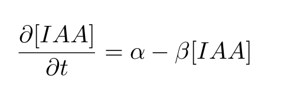
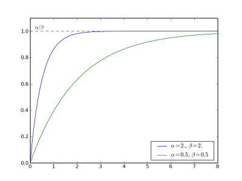
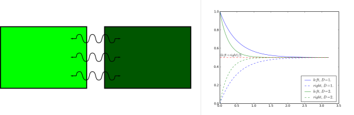
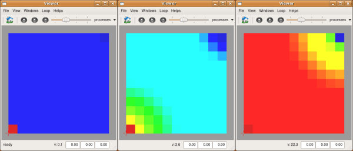

This package is an example package that simulate physiological processes (diffusion and reaction of compounds) on a fixed tissue.
Description
This simulation run the diffusion, creation and decay of a substance on a fixed tissue. The concentration of the substance is supposed uniform inside a given cell.
Creation Decay
These processes occurs inside the cytoplasm of each cell. They are caracterised by two constants, a creation speed and a decay speed rate.

Inside an isolated cell, these equations lead to an equilibrium.

Diffusion
Diffusion occurs between two neighbor cells through the wall and plasma membrane. This process tends to smooth the distribution of substance concentration between the cells.

Algorithms
This simulation will use a property that store the concentration of auxin (IAA) in each cell.
Creation Decay
The described equations above are integrated using the backward Euler scheme throught the Reaction algorithm. This algorithm requires only the definition of the two constants in each cell. By default, if a constant is not defined in a cell, this constant will be assumed equal to 0.
The actual process that modify the concentration of auxin in each cell consist to apply this algorithm on the IAA property
Diffusion
The diffusion algorithm requiers a relation of type graph between cells to store cell neighborhood. First we need to explicitly construct it from the implicit neighborhood provided by the mesh structure.
Then we just need to define the parameters for the diffusion algorithm. These parameters are the volume of each cell and the diffusion constant associated with each link between cells (each wall between two cells). By default, if the diffusion constant is not defined for a given link, this constant will be assumed equal to 0.
As for the reaction, the actual process that modify the concentration of auxin in each cell consist to apply this algorithm on the IAA property
Boundary conditions
A number of sources and sinks have been defined on the tissue in order to artificially modify the local concentrations. These special elements act through a boundary function that modify in place the concentrations.
Simulation loop
All the processes are chained in a loop and each step is repeted to run the simulation
"reinit" is a function that reset all concentrations and allow to restart the simulation from scratch.
Simulation
All above operation have been written in
simu.py, the main simulation file. First launch
create_tissue.py to create a grid tissue the first time.
user@computer:$ python create_tissue.py
then launch
simu.py to perform the simulation and observe the evolution of concentrations throughout time.
user@computer:$ python simu.py

Exercices
To go further :
- Inside the menu and on the toolbar, you can enable or disable each process. Pause the simulation, try to remove the diffusion for example and start again
- You can try to modify each parameter. In the example above, all cells have the same parameters, you can modify each of them individually. Beware that the time step used to perform the integration must be small enough to account for the diffusion parameter (the bigger the diffusion parameter, the smaller the dt)
- Instead of a regular grid, you can use any kind of tissue as long as they define a mesh structure inside. A good start might be to use the one obtained with the tissue drawing tutorial.